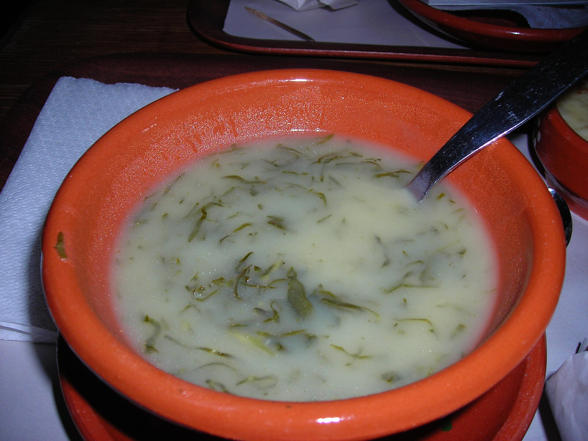
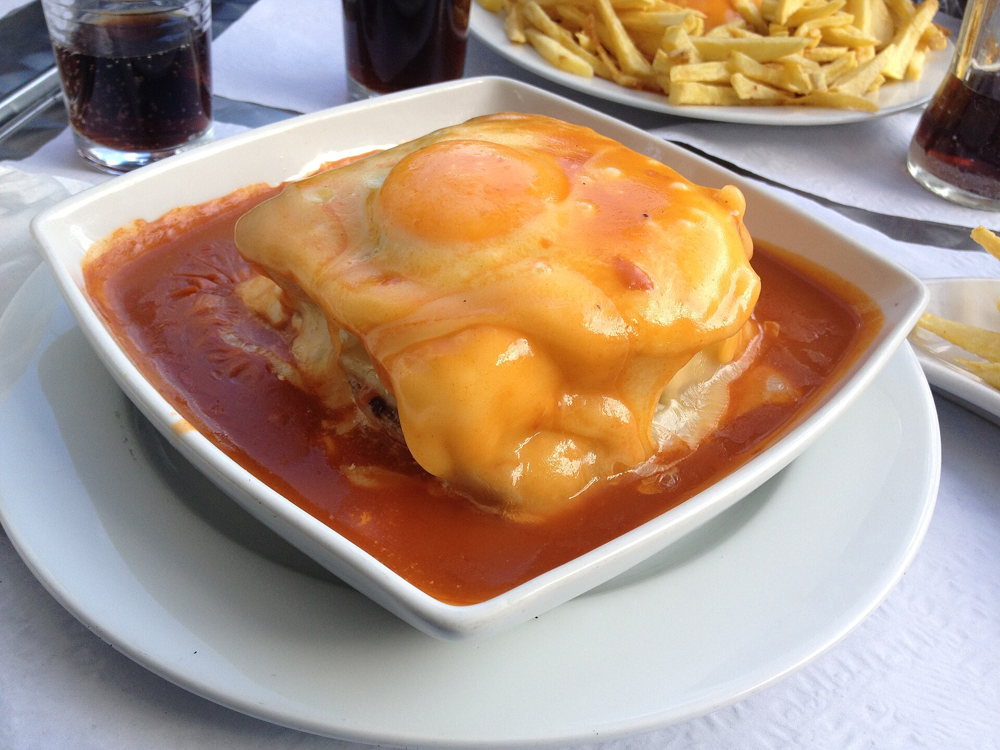
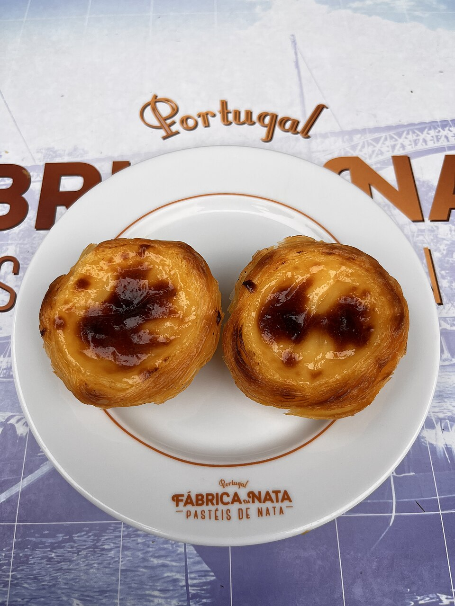

Bacalhau à Brás
Bacalhau desfiado, batata palha, ovos e azeitonas em uma das receitas mais queridas do país.
Uma cozinha de afetos
A culinária portuguesa é marcada pelo encontro entre o mar e a terra. Peixes frescos, azeite, pão, legumes, carnes e especiarias formam uma cozinha acolhedora e cheia de identidade.
Cada região guarda receitas próprias, preparadas em festas, almoços de família e pequenos restaurantes onde tradição e hospitalidade dividem a mesma mesa.
Clássicos à mesa
Receitas conhecidas em todo o país e especialidades que carregam a personalidade de diferentes cidades.
Bacalhau desfiado, batata palha, ovos e azeitonas em uma das receitas mais queridas do país.

Sopa tradicional preparada com couve, batata e rodelas de chouriço, presente em festas e encontros familiares.

Símbolo do Porto, combina pão, carnes, queijo derretido e um molho marcante servido bem quente.

Um clássico do verão e das festas populares, servido com pão, batatas ou salada.
Doçaria portuguesa
Gemas, açúcar, amêndoas e massas delicadas fazem parte de uma tradição desenvolvida ao longo de séculos.

Lisboa
Massa folhada crocante, creme delicado e canela: um dos sabores mais conhecidos de Portugal.

Aveiro
Doce de gemas e açúcar envolvido em uma fina hóstia, com formas que lembram o mar.

Sintra
Massa folhada recheada com creme de amêndoas, servida ainda morna e polvilhada com açúcar.
De norte a sul
O clima, a paisagem e os produtos locais transformam a gastronomia de cada região portuguesa.
Norte
Pratos de forno, enchidos, bacalhau e a cozinha do Porto e do Minho convidam a refeições demoradas.
Centro
Queijos, leitão, pratos de peixe e doces conventuais revelam receitas preservadas em vilas históricas.
Alentejo
Açordas, migas e ensopados mostram como ingredientes simples podem criar sabores memoráveis.
Algarve
Peixes, mariscos e cataplanas encontram figos, amêndoas e alfarroba em uma cozinha ligada ao mar e à terra.

Sabores e encontros
Mercado da Ribeira, LisboaViva a gastronomia
Ideias para conhecer ingredientes, pessoas e histórias por trás da cozinha portuguesa.
Explore bancas de peixe, frutas, queijos e produtos regionais em mercados municipais.
Conheça pequenos restaurantes familiares e prove pratos do dia preparados de forma simples.
Aprenda a preparar pastéis de nata, pão ou uma receita regional com quem conhece a tradição.
Descubra a produção de azeites, queijos e outros produtos e a relação entre a paisagem e a mesa.
Continue explorando


.JPG){kind=link}
.jpg){kind=link}